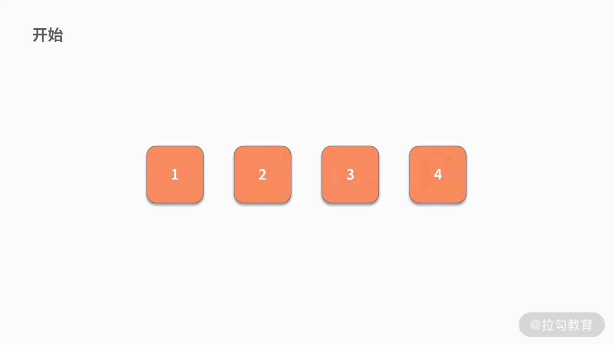

- 00 数据结构与算法，应该这样学！.md.html
- 01 复杂度：如何衡量程序运行的效率？.md.html
- 02 数据结构：将“昂贵”的时间复杂度转换成“廉价”的空间复杂度.md.html
- 03 增删查：掌握数据处理的基本操作,以不变应万变.md.html
- 04 如何完成线性表结构下的增删查？.md.html
- 05 栈：后进先出的线性表，如何实现增删查？.md.html
- 06 队列：先进先出的线性表，如何实现增删查？.md.html
- 07 数组：如何实现基于索引的查找？.md.html
- 08 字符串：如何正确回答面试中高频考察的字符串匹配算法？.md.html
- 09 树和二叉树：分支关系与层次结构下，如何有效实现增删查？.md.html
- 10 哈希表：如何利用好高效率查找的“利器”？.md.html
- 11 递归：如何利用递归求解汉诺塔问题？.md.html
- 12 分治：如何利用分治法完成数据查找？.md.html
- 13 排序：经典排序算法原理解析与优劣对比.md.html
- 14 动态规划：如何通过最优子结构，完成复杂问题求解？.md.html
- 15 定位问题才能更好地解决问题：开发前的复杂度分析与技术选型.md.html
- 16 真题案例（一）：算法思维训练.md.html
- 17 真题案例（二）：数据结构训练.md.html
- 18 真题案例（三）：力扣真题训练.md.html
- 19 真题案例（四）：大厂真题实战演练.md.html
- 20 代码之外，技术面试中你应该具备哪些软素质？.md.html
- 21 面试中如何建立全局观，快速完成优质的手写代码？.md.html
- 加餐 课后练习题详解.md.html
07 数组：如何实现基于索引的查找？
通过前面几个课时的学习，我们了解了线性表、栈、队列的基本概念，至此，相信你已经掌握了这些数据处理的基本操作，能够熟练地完成线性表、栈、队列结构下的增删查操作。
由于栈和队列是特殊的线性表，本质上它们都可以被看作是一类基本结构。而数组则可以看成是线性表的一种推广，它属于另外一种基本的数据结构。这一课时，我们就来学习数组的概念以及如何用数组实现增删查的操作。
数组是什么
数组是数据结构中的最基本结构，几乎所有的程序设计语言都把数组类型设定为固定的基础变量类型。我们可以把数组理解为一种容器，它可以用来存放若干个相同类型的数据元素。
例如：
- 存放的数据是整数型的数组，称作整型数组；
- 存放的数据是字符型的数组，则称作字符数组；
- 另外还有一类数组比较特殊，它是数组的数组，也可以叫作二维数组。
如果用数学的方式来看，我们可以把普通的数组看成是一个向量，那么二维数组就是一个矩阵。不过，二维数组对数据的处理方式并没有太多特别之处。
数组可以把这些具有相同类型的元素，以一种不规则的顺序进行排列，这些排列好的同类数据元素的集合就被称为数组。
数组在内存中是连续存放的，数组内的数据，可以通过索引值直接取出得到。如下图所示，我们建立了一个简单的数组，数组中的每个数据位置都可以放入对应的数据内容。
数据元素 A、B 分别为数组的第一个元素和第二个元素，根据其对应位置分别放入数组空间的第一个和第二个位置。数组的索引值从 0 开始记录，因此，上图中数据 A 的索引值是 0，B 的索引值是 1。
实际上数组的索引就是对应数组空间，所以我们在进行新增、删除、查询操作的时候，完全可以根据代表数组空间位置的索引值进行。也就是说，只要记录该数组头部的第一个数据位置，然后累加空间位置即可。下面我们来具体讲一下如何通过数组来实现基于索引的新增、删除和查找操作。
数组的基本操作
数组在存储数据时是按顺序存储的，并且存储数据的内存也是连续的，这就造成了它具有增删困难、查找容易的特点。同时，栈和队列是加了限制的线性表，只能在特定的位置进行增删操作。相比之下，数组并没有这些限制，可以在任意位置增删数据，所以数组的增删操作会更为多样。下面我们来具体地介绍一下数组的增删查操作。
数组的新增操作
数组新增数据有两个情况：
- 第一种情况，在数组的最后增加一个新的元素。此时新增一条数据后，对原数据产生没有任何影响。可以直接通过新增操作，赋值或者插入一条新的数据即可。时间复杂度是 O(1)。
- 第二种情况，如果是在数组中间的某个位置新增数据，那么情况就完全不一样了。这是因为，新增了数据之后，会对插入元素位置之后的元素产生影响，具体为这些数据的位置需要依次向后挪动 1 个位置。
例如，对于某一个长度为 4 的数组，我们在第 2 个元素之后插入一个元素，那么修改后的数组中就包含了 5 个元素，其中第 1、第 2 个元素不发生变化，第 3 个元素是新来的元素，第 4、第 5 个元素则是原来第 3、第 4 个元素。这一波操作，就需要对一般的数据进行重新搬家。而这个搬家操作，与数组的数据量线性相关，因此时间复杂度是 O(n)。

数组的删除操作
数组删除数据也有两种情况：
- 第一种情况，在这个数组的最后，删除一个数据元素。由于此时删除一条数据后，对原数据没有产生任何影响。我们可以直接删除该数据即可，时间复杂度是 O(1)。
- 第二种情况，在这个数组的中间某个位置，删除一条数据。同样的，这两种情况的区别在于，删除数据之后，其他数据的位置是否发生改变。由于此时的情况和新增操作高度类似，我们就不再举例子了。
数组的查找操作
相比于复杂度较高的增删操作，数组的查找操作就方便一些了。由于索引的存在，数组基于位置的查找操作比较容易实现。我们可以索引值，直接在 O(1) 时间复杂度内查找到某个位置的元素。
例如，查找数组中第三个位置的元素，通过 a[2] 就可以直接取出来。但对于链表系的数据结构，是没有这个优势的。
不过，另外一种基于数值的查找方法，数组就没有什么优势了。例如，查找数值为 9 的元素是否出现过，以及如果出现过，索引值是多少。这样基于数值属性的查找操作，也是需要整体遍历一遍数组的。和链表一样，都需要 O(n) 的时间复杂度。
上面的操作，在很多高级编程语言都已经封装了响应的函数方法，是不需要自己独立开发的。例如，新增系列的 push(), unshift(), concat() 和 splice()，删除系列的 pop(),shift() 和slice()，查找系列的 indexOf() 和 lastIndexOf() 等等。不过别被迷惑，即使是封装好了的函数，其时间复杂度也不会发生改变。依然是我们上面分析的结果，这些底层原理是需要你理解并掌握的。
数组增删查操作的特点
通过以上内容的学习，我们发现数组增删查的操作相比栈、队列来说，方法更多，操作更为灵活，这都是由它们数据结构的特点决定的。接下来，我们来归纳一下数组增删查的时间复杂度。
- 增加：若插入数据在最后，则时间复杂度为 O(1)；如果中间某处插入数据，则时间复杂度为 O(n)。
- 删除：对应位置的删除，扫描全数组，时间复杂度为 O(n)。
- 查找：如果只需根据索引值进行一次查找，时间复杂度是 O(1)。但是要在数组中查找一个数值满足指定条件的数据，则时间复杂度是 O(n)。
实际上数组是一种相当简单的数据结构，其增删查的时间复杂度相对于链表来说整体上是更优的。那么链表存在的价值又是什么呢？
- 首先，链表的长度是可变的，数组的长度是固定的，在申请数组的长度时就已经在内存中开辟了若干个空间。如果没有引用 ArrayList 时，数组申请的空间永远是我们在估计了数据的大小后才执行，所以在后期维护中也相当麻烦。
- 其次，链表不会根据有序位置存储，进行插入数据元素时，可以用指针来充分利用内存空间。数组是有序存储的，如果想充分利用内存的空间就只能选择顺序存储，而且需要在不取数据、不删除数据的情况下才能实现。
数组的案例
例题，假设数组存储了 5 个评委对 1 个运动员的打分，且每个评委的打分都不相等。现在需要你：
- 用数组按照连续顺序保存，去掉一个最高分和一个最低分后的 3 个打分样本；
- 计算这 3 个样本的平均分并打印。
要求是，不允许再开辟 O(n) 空间复杂度的复杂数据结构。
我们先分析一下题目：第一个问题，要输出删除最高分和最低分后的样本，而且要求是不允许再开辟复杂空间。因此，我们只能在原数组中找到最大值和最小值并删除。第二个问题，基于删除后得到的数组，计算平均值。所以解法如下：
- 数组一次遍历，过程中记录下最小值和最大值的索引。对应下面代码的第 7 行到第 16 行。时间复杂度是 O(n)。
- 执行两次基于索引值的删除操作。除非极端情况，否则时间复杂度仍然是 O(n)。对应于下面代码的第 18 行到第 30 行。
- 计算删除数据后的数组元素的平均值。对应于下面代码的第 32 行到第 37 行。时间复杂度是 O(n)。
因此，O(n) + O(n) + O(n) 的结果仍然是 O(n)。
代码如下：
public void getScore() {
int a[] = { 2, 1, 4, 5, 3 };
max_inx = -1;
max_val = -1;
min_inx= -1;
min_val = 99;
for (int i = 0; i < a.length; i++) {
if (a[i] > max_val) {
max_val = a[i];
max_inx = i;
}
if (a[i] < min_val) {
min_val = a[i];
min_inx = i;
}
}
inx1 = max_inx;
inx2 = min_inx;
if (max_inx < min_inx){
inx1 = min_inx;
inx2 = max_inx;
}
for (int i = inx1; i < a.length-1; i++) {
a[i] = a[i+1];
}
for (int i = inx2; i < a.length-1; i++) {
a[i] = a[i+1];
}
sumscore = 0;
for (int i = 0; i < a.length-2; i++) {
sumscore += a[i];
}
avg = sumscore/3.0;
System.out.println(avg);
}
总结
本节内容主要讲解了数组的原理和特性，以及数组的增删查的操作方法。由于数组中没有栈和队列那样对于线性表的限制，所以增删查操作变得灵活很多，代码实现的方法也更多样，所以我们要根据实际需求选择适合的方法进行操作。
在实际操作中，我们还要注意根据数组的优缺点合理区分数组和链表的使用。数组定义简单，访问方便，但在数组中所有元素类型必须相同，数组的最大长度必须在定义时给出，数组使用的内存空间必须连续等。
相对而言，数组更适合在数据数量确定，即较少甚至不需要使用新增数据、删除数据操作的场景下使用，这样就有效地规避了数组天然的劣势。在数据对位置敏感的场景下，比如需要高频根据索引位置查找数据时，数组就是个很好的选择了。
练习题
下面，我们给出一道练习题。给定一个排序数组，你需要在原地删除重复出现的元素，使得每个元素只出现一次，返回移除后的数组和新的长度，你不需要考虑数组中超出新长度后面的元素。要求，空间复杂度为 O(1)，即不要使用额外的数组空间。
例如，给定数组 nums = [1,1,2]，函数应该返回新的长度 2，并且原数组 nums 的前两个元素被修改为 1, 2。 又如，给定 nums = [0,0,1,1,1,2,2,3,3,4]，函数应该返回新的长度 5，并且原数组 nums 的前五个元素被修改为 0, 1, 2, 3, 4。